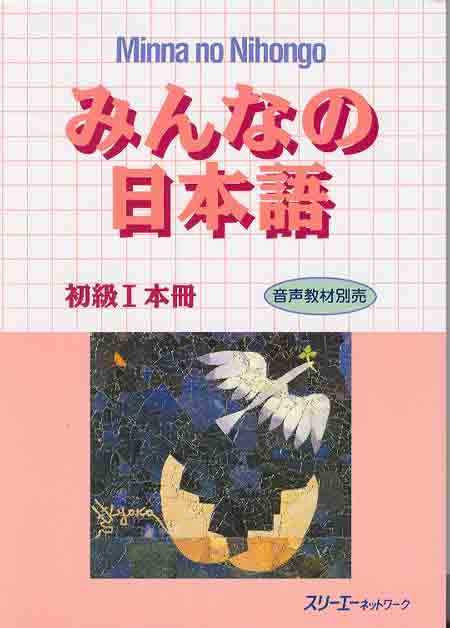
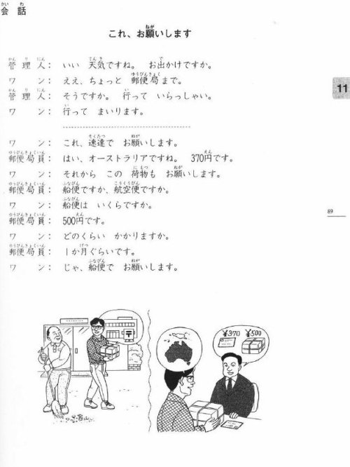

Minna no Nihongo
Wydawnictwo: 3a Corporation
- Dostępność w polskich księgarniach: nie
- Język używany do wyjaśnień zawartych w książce:
- Brak wyjaśnień gramatyki w głównej książce. Język książki: japoński
- Wyjaśnienia gramatyki po angielsku w dodatkowej książce z serii „Minna no Nihongo”
- Zakres materiału: wymieszane zagadnienia N5 (książka nr 1), wymieszane zagadnienia z N4 (książka nr 2). Obie części książki dają pełny poziom podstawowy (初級; N5+N4)
- Ilość stron: 250
- 25 lekcji zawierających:
- Dialogi 
- Przykładowe zdania z formami gramatycznymi z danej lekcji.
- Notatkę z gramatyki z danej lekcji – tylko przedstawione konstrukcje, brak objaśnień w głównym podręczniku
- Całość książki podzielona na 8 części:
- Wstęp dotyczący fonetyki języka japońskiego oraz tabele hiragany i katakany.
- Część właściwa składającą się z 25 lekcji.
- Testy powtórkowe co 6 lekcji.
- Listy partykuł ułożone z adnotacją, w jakiej lekcji zostały użyte.
- Listy słów ułożone w porządku alfabetycznym z adnotacją, w której lekcji zostały użyte.
- Listy form gramatycznych ułożone z adnotacją, w której lekcji zostały użyte.
- Mapa Japonii z zaznaczonymi prefekturami.
- Mapa świata.
„Minna no nihongo” to obok „Genki” jeden z najpopularniejszych podręczników wybierany przez szkoły językowe. Jednak w przeciwieństwie do „Genki” nie mówimy tu jedynie o książce + ćwiczeniówce, ale o całej serii z pod szyldu „Minna no Nihongo”.
W niniejszej recenzji zostaną omówione jedynie plusy i minusy głównego podręcznika nr 1, ponieważ omówienie całości jest właściwie niemożliwe i każda z pozycji powinna być rozpatrywana osobno.

Plusy:
- Spora ilość ćwiczeń podzielona w lekcji na sekcję B (uzupełnianie), C (ćwiczenia ze słuchu) i Mondai (ćwiczenia ze słuchu, uzupełnianie, tworzenie zdań, ćwiczenia z rozumienia tekstu).
- Dużo dodatkowych produktów spod znaku „Minna no Nihongo”.
- Materiał gramatyczny dość rozdrobniony na poszczególne lekcje, przez co przyswajanie go jest mniej „bolesne” niż np. z „Genki”.
- Testy powtórkowe co 6 lekcji.
- Nowe zwroty grzecznościowe pojawiające się w niemal każdym dialogu.
- Klucz odpowiedzi do ćwiczeń, skrypty ćwiczeń ze słuchu.
Plus/minus:
- Podręcznik w całości po japońsku, bez podpisów w rōmaji co zmusza ucznia do przyswojenia kany jeszcze przed rozpoczęciem nauki gramatyki.

Minusy:
- Brak list ze słownictwem przy każdej lekcji.
- Brak wyjaśnień gramatyki w głównym podręczniku.
- Podręcznik nie dla samouków! Sama książka wymaga nauki z pomocą nauczyciela.
Przedstawiony podręcznik sprawdza się całkiem nieźle jako główne narzędzie na kursie językowym, natomiast bez dodatkowej książki z wyjaśnieniami gramatyki jest całkowicie bezużyteczny dla samouków. Na szczęście, tak jak wspomniałam na początku, nie jest to jedna książka ale cała seria, w skład której między innymi wchodzą:
- „Minna no Nihongo I” (podrecznik, około N5)
- „Minna no Nihongo II” (podręcznik, około N4) – całość I i II to poziom podstawowy (初級)
- „Minna no Nihongo I” (i II – osobna książka) - Tłumaczenie i Gramatyka (みんなの日本語；初級I翻訳・文法解説英語版) – wyjaśnienia w języku angielskim
- „CD x 4 - Minna no Nihongo I” (i II) - Cztery płyty CD w języku japońskim zawierają słownictwo, przykłady zdań, ćwiczenia, dialogi i zadania ze słuchu do nauki wraz z podręcznikiem „Minna no Nihongo”.
- „Minna no Nihongo I (i II – osobna książka) - Zbiór zadań” (みんなの日本語初級I標準問題集) – dodatkowa ćwiczeniówka.
- „Minna no Nihongo I - CD Rozumienie ze słuchu” (みんなの日本語初級I聴解タスク２５) – ćwiczenia z rozumienia ze słuchu
- „Minna no Nihongo I - Rozumienie teksu” (みんなの日本語初級I;初級で読めるトピック２５) - Rozumienie Tekstu Minna no Nihongo I zawiera 25 tekstów (np. "Ohanami", "Skarb", "Sumo", "Era Edo"...) dla początkujących wraz z ćwiczeniami.
- „Minna no Nihongo I - Kanji” (みんなの日本語初級I漢字英語版) - Książka zawiera 220 kanji, ćwiczenia, quizy i krótkie teksty. Wyjaśnienia są w języku angielskim.
- „Minna no Nihongo I – Ćwiczenia z kanji” (みんなの日本語初級I漢字練習帳) – dodatkowe ćwiczenia do „Minna no Nihongo I - Kanji”.
To nie wszystkie dodatki z pod znaku „Minna no Nihongo”. Cała seria jak dotąd liczy sobie aż 21 książek! Z opisem pozostałych pozycji można się zapoznać na stronie wydawnictwa „3a Corporation”: http://www.3anet.co.jp/english/books/books_01.html
Odwiedzający tę stronę najczęściej szukali:
minna no nihongo (153), minna no nihongo opinie (1)Poprzednia część tej lekcji: Japoński - kurs podstawowy